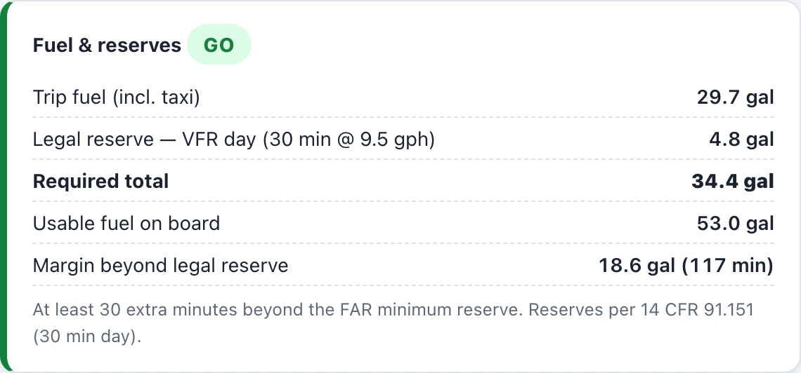
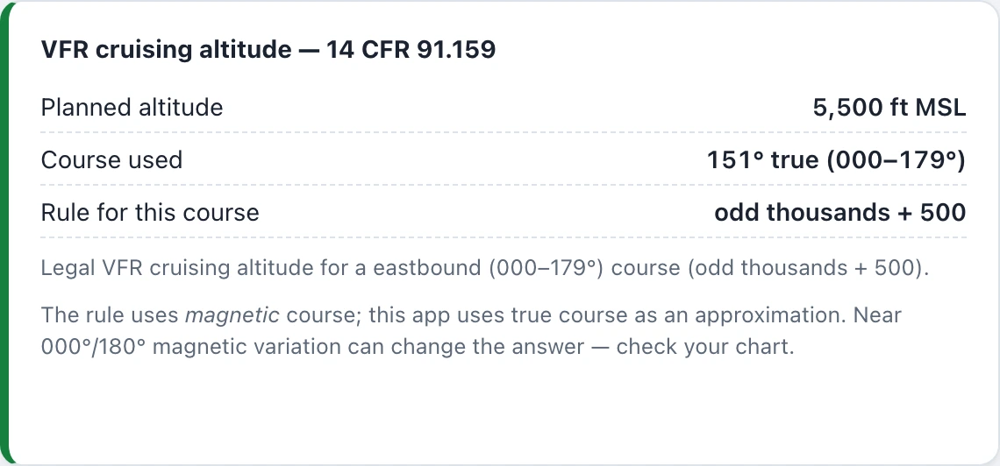
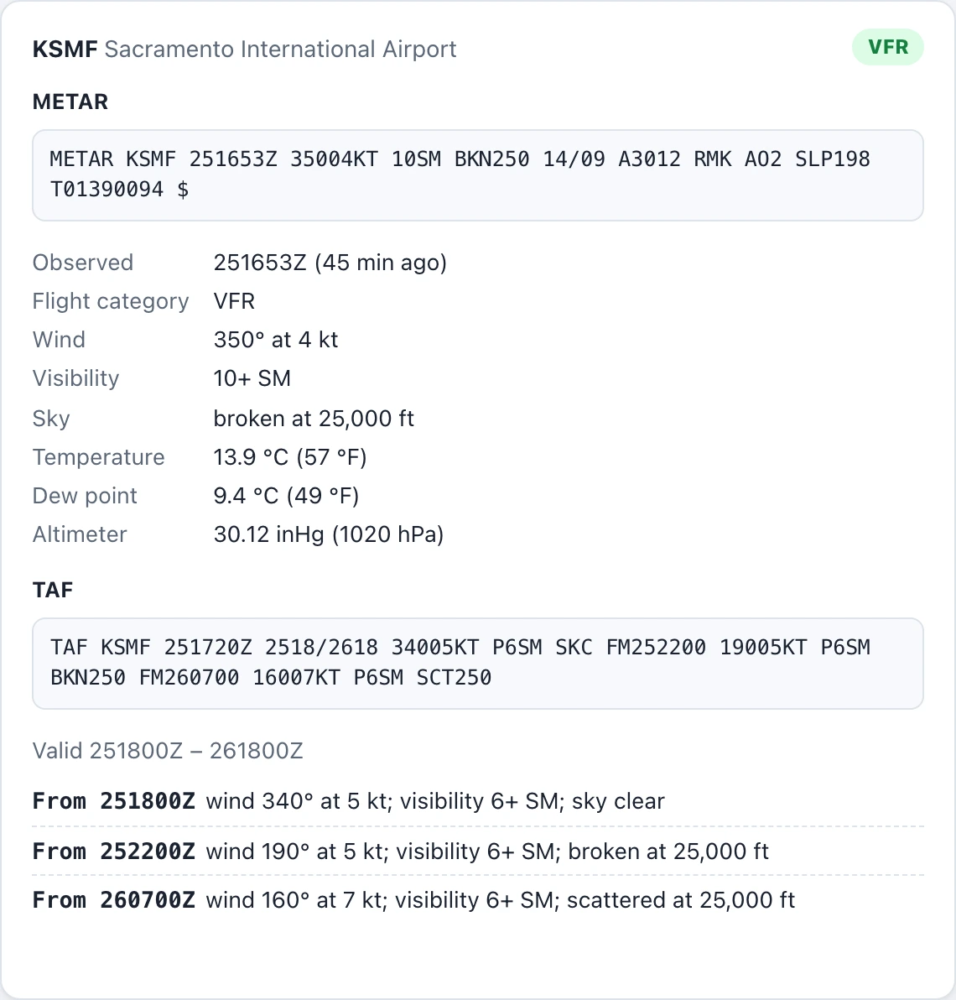

-
Wind triangle
True course, wind correction angle, heading and ground speed from a forecast at the route midpoint — or winds you enter yourself.
-
Fuel & reserves
Trip fuel plus the 14 CFR 91.151 reserve, and a plain GO, TIGHT or NO-GO verdict against the fuel on board.
-
Weather & alternates
Decoded METAR and TAF for both airports, a VFR cruising-altitude check, and alternates within 25 NM of your route.
Textbook example: course 090°, wind 045° at 30 kt. Crab 10° left to hold the track.


